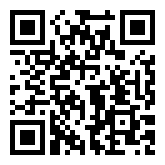
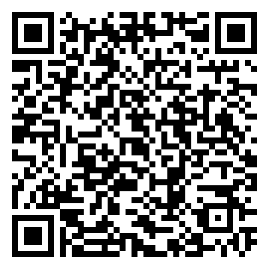
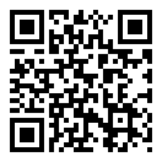
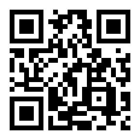

Un pase Interrail gratis para recorrer Europa el año que cumples 18.


Prácticas en empresas europeas, mientras estudias tu Grado Medio.
Voluntariado europeo en proyectos sociales, medioambientales o culturales.

No hace falta que te apuntes hoy. Solo que sepas dónde buscar cuando te toque.

Y si dudas: pregunta mañana a tu tutor/a. Literal.
3 preguntas rápidas. A ver si te has enterado 🎮
Es tu WhatsApp sin roaming, tu cargador USB-C, tu protección al comprar online.
Mudarte, estudiar, trabajar en 27 países. Tu DNI es tu pasaporte.
DiscoverEU, Erasmus+ FP, Solidarity Corps. Apúntate o pierde la oportunidad.
¿Alguna pregunta?